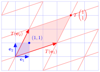

Linear Transformations
Contents
Linear Transformations#
Definition#
Definition 13 (Linear transformation)
If \(V\) and \(W\) are two vector spaces over the same field \(F\) then by a linear transformation (or linear mapping) is a mapping \(T: V \to W\) that for any two vectors \(\mathbf{u}, \mathbf{v} \in V\) and any scalar \(\alpha \in F\) the following conditions hold
addition operation: \(T(\mathbf{u} + \mathbf{v}) = T(\mathbf{u}) + T(\mathbf{v})\);
scalar multiplication: \(T(\alpha \mathbf{u}) = \alpha T(\mathbf{u})\).
The result of applying a linear transformation to an object is known as the image.
To show whether a transformation is a linear transformation can combine both conditions from Definition 13 to show that
Transformation matrices#
For convenience we tend to use matrices to represent linear transformations. Let \(T: V \to W\) be a linear transformation from the vector spaces \(V\) to \(W\). If \(\{\mathbf{v}_1, \mathbf{v}_2, \ldots, \mathbf{v}_n\}\) is a basis for \(V\) then for a vector \(\mathbf{u} \in V\)
and by the definition of a linear transformation
so \(T(\mathbf{u})\) depends on the vectors \(T(\mathbf{v}_1), T(\mathbf{v}_2), \ldots, T(\mathbf{v}_n)\). We can write this as the matrix equation
In other words we can apply a linear transformation simply by multiplying \(\mathbf{u}\) by a matrix \(A\).
Example 12
A linear transformation \(T:\mathbb{R}^2 \to \mathbb{R}^2\) is defined by \(T: (x, y) \mapsto (3x + y, x + 2y)\). Calculate the transformation matrix and use it to calculate \(T(1, 1)\).
Solution
Since we are mapping from \(\mathbb{R}^2\) the transformation matrix is
Applying the transformation to the standard basis vectors
so the transformation matrix is
Applying the transformation matrix to \((1, 1)\)
The affects of the linear transformation from Example 12 is illustrated in Fig. 16. Note that the transformation \(T\) can be thought of as changing the basis of the vector space. The unit square with respect to the basis \(\{\mathbf{e}_1, \mathbf{e}_1\}\) has been transformed into a unit parallelogram with respect to the basis \(\{ T(\mathbf{e}_1), T(\mathbf{e}_2)\}\).
{kind=link}

Fig. 16 The affect of applying a linear transformation \(T: (x,y) \mapsto (3x + y, x + 2y)\) to the vector \((1,1)\).#
Finding the transformation matrix from a set of images#
The calculation of the transformation matrix in Example 12 was straightforward as we knew what the transformation was. This will not always be a the case and we may know what the output (known as the image) of the transformation is but not the transformation itself. Consider a linear transformation \(T: \mathbb{R}^n \to \mathbb{R}^m\) applied to vectors \(u_1, u_2, \ldots, u_n\). If \(A\) is the transformation matrix for \(T\) then
therefore
Theorem 4 (Determining the linear transformation given the inputs and image vectors)
Given a linear transformation \(T: \mathbb{R}^n \to \mathbb{R}^m\) applied to a set of \(n\) vectors \(\mathbf{u}_1, \mathbf{u}_2, \ldots, \mathbf{u}_n\) with known image vectors \(T(\mathbf{u}_1), T(\mathbf{u}_2), \ldots, T(\mathbf{u}_n)\) then the transformation matrix \(A\) for \(T\) is
Example 13
Determine the transformation matrix \(A\) for the linear transformation \(T\) such that
Solution
Using Gauss-Jordan elimination to determine the inverse of \((\mathbf{u}_1, \mathbf{u}_2)\)
so \((\mathbf{u}_1, \mathbf{u}_2)^{-1} = \begin{pmatrix} 2 & -1 \\ -1 & 1 \end{pmatrix}\). Right multiplying the image matrix
This is the transformation matrix from Example 12.
Inverse transformation#
An important property of linear transformations for computer graphics is that their affects can be reversed, i.e., if \(\mathbf{v} = T(\mathbf{u})\) then we can undo this to get \(\mathbf{u} = T^{-1}(\mathbf{v})\). The transformation \(T^{-1}\) is known as the inverse transformation.
Definition 14 (Inverse linear transformation)
Let \(T: V \to W\) be a linear transformation with the transformation matrix \(A\) then \(T\) has an inverse transformation denoted by \(T^{-1}: W \to V\) which reverses the affects of \(T\). If \(\mathbf{u} \in V\) and \(\mathbf{v} \in W\) then
where \(A^{-1}\) is the transformation matrix for \(T^{-1}\).
Example 14 (6.4)
Determine the inverse of the transformation \(T: \mathbb{R}^2 \to \mathbb{R}^2\) defined by \(T(x, y) \mapsto (3 x + y, x + 2 y)\) and calculate \(T^{-1}(4, 3)\).
Solution
We saw in example 6.2 that the transformation matrix for \(T\) is
which has the inverse
Determining the inverse transformation
Calculating \(T^{-1}(4, 3)\)
Composite linear transformations#
Definition 15 (Composite transformations)
Let \(S : V \to W\) and \(T: W \to X\) be two linear transformations over the vector spaces \(V, W\) and \(X\). The composition of \(S\) and \(T\) is the transformation \(S \circ T: V \to X\) defined by
for all vectors \(\mathbf{u} \in V\).
As before we want to be able to represent composite linear transformations as a matrix. If \(S\) and \(T\) are two linear transformations with transformation matrices \(B\) and \(A\) respectively, then the composite transformation \(S \circ T(\mathbf{u}\) is
If we let \(C = B \cdot A\) then
Theorem 5 (Composite transformation matrices)
Given two linear transformations \(S:V \to W\) and \(T:W \to X\) with transformation matrices \(B\) and \(A\) respectively then the composition \(S \circ T\) of the vector \(\mathbf{u} \in V\) is
where \(C = B \cdot A\).
Example 15
Two linear transformations is defined as \(T:(x, y, z) \mapsto (2 x + 4 y, -x + 3 y, x + 2 y)\) and \(S:(x, y) \mapsto (2x + y - z, 3x + z, y - 2z)\).
(i) Determine the composite linear transformation \(S \circ T(\mathbf{u})\) for \(\mathbf{u} = (x, y, z)\).
Solution
(ii) Determine the single transformation matrix \(C\) that represents \(S\circ T\).
Solution
(iii) Use your matrix \(C\) to determine \(S \circ T(\mathbf{u})\) for \(\mathbf{u} = (x, y, z)\).